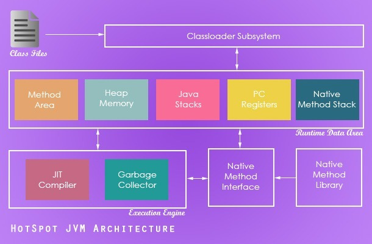
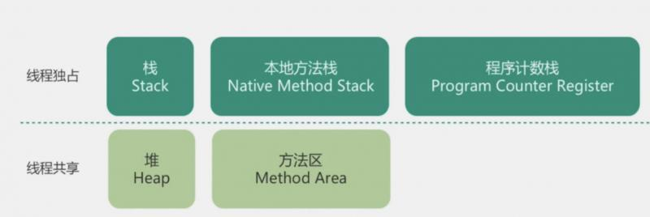
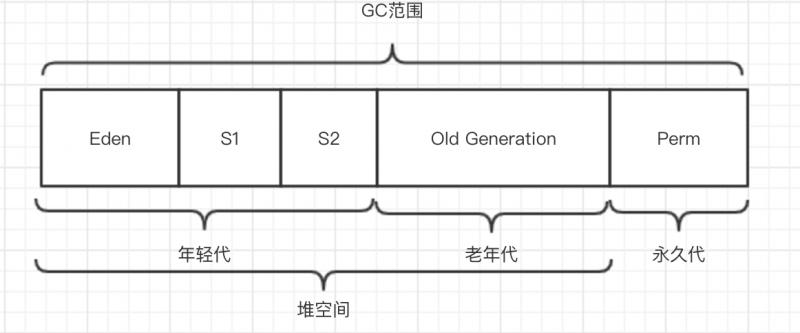
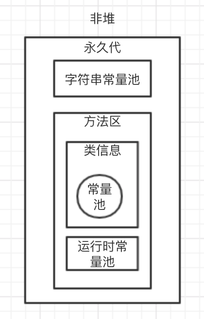
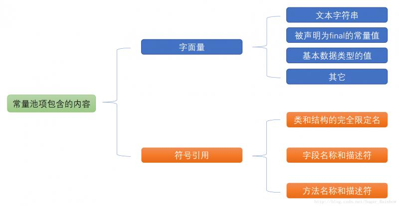
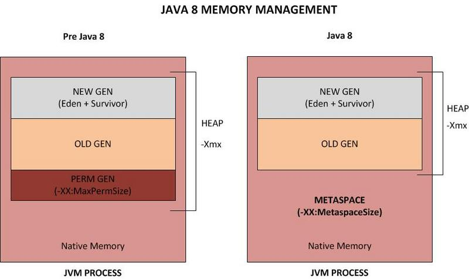
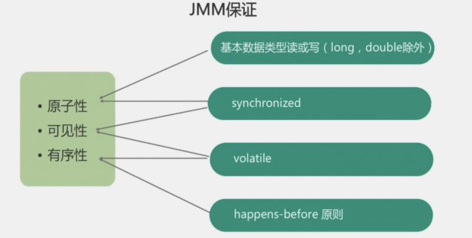

本篇文章我们将尝试回答以下问题：
ok，开始。怎们还是先讲原理，再说答案。如果时间不足，也可以直接跳到最后看答案。
本次分享我们主要围绕jvm内存结构展开，这也是java面试必考知识点之一。所以我们先来看看jvm内存结构到底是啥样子。
我们首先看下面这张图：

这张图是虚拟机的结构图，当我们在讨论jvm内存模型时，指的就是中间五彩的那条区域：运行时数据区（runtime data area）。
我们把这个区域单独画出来，如下图所示：

现在我们来看看每个区域的用途
每当一个线程去执行方法时，就会同时在栈里面创建一个栈帧（Stack Frame）用于存储局部变量表、操作数栈、动态链接、方法出口等。
每一个方法从被调用到执行完成的过程，都对应着一个栈帧从入栈到出栈的过程。
栈是线程私有的，每个线程在栈中保有自己的数据，别的线程无法访问。
在栈中我们可能遇到两种异常：StackOverflowError和OutOfMemoryError
StackOverflowError是指线程请求的栈深度大于虚拟机所允许的深度
OutOfMemoryError是指栈扩展时无法申请到足够的内存
这两种异常我们会在后面的文章中详细讲到。
本地方法栈和栈差不多，区别只在于本地方法栈为Native方法服务。
Native 方法就是一个Java调用非Java代码的接口，比如JNI。
本地方法栈也是线程私有的。
要理解程序计数器，我们需要知道java代码最终都要编译成一条条的字节码，然后由字节码解释器一条条的执行的。而程序计数器可以看作是当前线程所执行的字节码的行号计数器。
如果正在执行的是一个java方法，那么这个计数器记录的是正在执行的字节码指令地址。如果正在执行的是Native方法，那么计数器的值为Undefined。
程序计数器也是线程私有的，每条线程都有一个独立的程序计数器，各线程的程序计数器互不影响。
程序计数器是唯一一个不会OOM的内存区域。
堆应该是java内存中占用空间最大的一个区域，大家喜闻乐见的垃圾回收就主要发生在这个区域。
堆的唯一作用就是存放对象，不过并非所有对象都在堆中。这个我们以后会讲到。
堆如果空间不足，就会抛出OOM异常。
堆是可以让多个线程共享的。
方法区也是可以让多个线程共享的。
方法区主要用来存放类的版本，字段，方法，接口、常量池和运行时常量池。
常量池里存储着字面量和符号引用。
还记得我们在jvm类加载面试题详解里说到的“加载”过程吗？其中说到“类加载器把类读入内存”。这里的所说的“内存”，指的就是方法区。
和方法区相关的知识点有永久代、元空间、常量池等。这几个概念非常容易把人绕晕，所以接下来我会尽量画图说明，给大家讲清楚。
作为和堆一样可以让线程共享的区域，堆之外的的空间被叫做非堆（Non-Heap）。可以粗略地理解为非堆里包含了永久代，而永久代里又包括了方法区。
我们常常把永久代和方法区等同起来，然而永久代其实是Hotspot虚拟机把分代GC的范围扩展到方法区的产物。（分代GC我们会在后面讲到）。如下图：

所以，永久代和方法区虽然基本上指的是同一片内存区域，但是实质上是有差别的。
而到了jdk1.8中，永久代被取消，取而代之的便是元空间。
元空间跟永久代最大的区别就在于，元空间直接使用机器内存，不在jvm虚拟机内。所以理论上你的机器内存有多大，元空间就能有多大。
此外，之前永久代的符号引用(Symbols)转移到了堆外内存（native heap）；字面量(interned strings)和类的静态变量(class statics)转移到了堆内（heap）。
这样做的好处在于可以减少OOM，同时方便HotSpot和JRockit合并。
上一个小节我们提到了HotSpot和JRockit，这是个啥呢？
要知道，jdk的全称是Java Development Kit ，Java开发工具包。可以简单认为，jdk就是各种java开发工具+java虚拟机。而HotSpot就是目前Oracle jdk默认使用的虚拟机。
我们可以用java -version查看目前使用的虚拟机：
~ java -version
java version "1.8.0_151"
Java(TM) SE Runtime Environment (build 1.8.0_151-b12)
Java HotSpot(TM) 64-Bit Server VM (build 25.151-b12, mixed mode)看见最后一行了吗？“Java HotSpot(TM) 64-Bit”说明我目前正在用的就是HotSpot。
除了HotSpot之外，还有很多其他的虚拟机，比如JRockit就是由BEA公司开发的一款java虚拟机，号称世界最快。
后来 JRockit被Oracle收购，于是Oracle就同时拥有了HotSpot和JRockit两款虚拟机，这也是为什么要把它们合并的原因之一。
上面我们提到了常量池、运行时常量池和字符串常量池，现在我们来看看这几个池子到底是个什么关系。
以下为jdk1.7的情况。
首先还是来张图：

数据是怎么在这几个池子里流转的呢？
首先，当类被加载的时候，class文件就会被加载到方法区，里面有块区域就被称为常量池。常量池主要存储两个东西：字面量（Literal）和符号引用（Symbolic References）。
下面这个图清楚的展示了常量池的内容：

当程序运行到该类的时候，常量池的大部分内容都会进入运行时常量池。但是String不同，String对象会存在堆里，然后在字符串常量池保存一个引用。
当主线程开始实例化字符串的时候，先到字符串常量池找有没有相等的字符串，有的话就直接把引用赋值给变量。
不过，需要注意的是，如果以创建对象的方式创建字符串，比如new String("abc")，那么，会在内存中开辟一块全新的内存地址，创建一个新对象，然后把引用赋值给变量，就没有字符串常量池的事了。
看到这儿你可能要问了，what？直接内存是什么鬼？
直接内存并不是虚拟机运行时数据区的一部分，但是这部分区域却可以被虚拟机使用，且使用不当也会OOM，所以干脆在这讲一下。
在jdk1.4中加入的NIO类引入了一种基于通道和缓冲区的IO方式，可以直接分配堆外内存，并操作。理论上来说，直接内存由于不在虚拟机内，所以不受虚拟机内存大小控制（是不是有点像元空间？）。但是如果这块空间太大，可能会挤占虚拟机的内存，毕竟物理内存有限，从而使虚拟机在动态扩展的时候由于空间不足而抛出OOM。
jvm内存结构到此结束，下面我们来说说java内存模型。
看下面这张图：

java8中，元空间（METASPACE）取代了永久代（PREM GEN），并且移到了堆外内存（Native Memory）中。
看到这你是不是在想：什么鬼？难道刚刚我们说的不是java内存模型吗？
实际上，jvm内存模型和java内存模型的确是两个比较容易混淆的概念。
java内存模型是指Java Memory Model，简称JMM。用于屏蔽掉各种硬件和操作系统的内存访问差异，以实现让Java程序在各种平台下都能达到一致的并发效果，JMM规范了Java虚拟机与计算机内存是如何协同工作的：规定了一个线程如何和何时可以看到由其他线程修改过后的共享变量的值，以及在必须时如何同步的访问共享变量。
好吧，上面这段话着实不大好理解。我们化繁为简，主要记住JMM规范了程序中变量的访问规则，保证了操作的原子性、可见性、有序性。

1.描述一下jvm内存模型
jvm内存模型分为5个区域，其中线程独占的区域是栈、本地方法栈、程序计数器，线程共享的区域是堆、方法区。
2.描述一下java内存模型
回答这个问题一定要问清楚是不是要问java内存模型，确认是的话，可以回答：java内存模型规定了变量的访问规则，保证操作的原子性、可见行、有序性。
3.谈一下你对常量池的理解
常量池是类在编译后储存常量的一块区域，当程序运行到该类，常量池的大部分数据会进入运行时常量池，字符串会进入字符串常量池。
4.什么情况下会发生栈内存溢出？和内存溢出有什么不同？
栈内存溢出指程序调用的栈深度多大或栈空间不足时抛出的StackOverflowError。
一般所谓内存溢出指的是堆内存溢出，抛出的是OutOfMemoryError:java heap space。
在jdk1.7中，还可能出现永久代内存溢出，抛出的是OutOfMemoryError: PermGen space
在jdk1.8中，则会出现元空间溢出，抛出的是OutOfMemoryError：MetaSpace
5.String str = new String(“abc”)创建了多少个实例？
虽然很多博客都告诉我们创建了两个对象：一个字符串abc对象和一个字符串常量池里指向abc的引用对象。
但实际情况要更复杂一点。
实际上在执行完String str = new String(“abc”)之后，其实只创建了一个对象：堆里的字符串对象。而str直接指向该对象。在执行intern()方法后，才会到字符串常量池创建引用对象。当然有时候这个过程会自动完成，但情况比较复杂，难以确定。
有很多面试官其实自己也搞不清，所以不妨先告诉他创建了两个对象，然后再分析一番，效果更好。
永久代（PermGen）和元空间的区别(Metaspace)
java用这样的方式生成字符串：String str = "Hello"，到底有没有在堆中创建对象？
JVM内存溢出详解
系列文章总目录：https://mp.weixin.qq.com/s/56JgXLArTAEDj1f3y4arLA